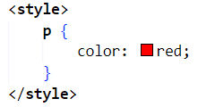
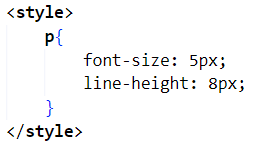
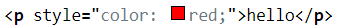
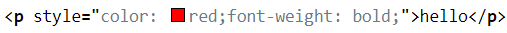
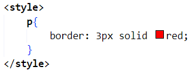
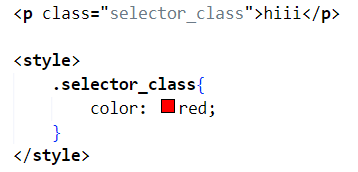
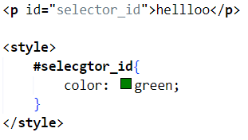

-첫번째 내용: CSS의 기본문법
css와 html은 완전히 다른 언어이기 때문에 컴퓨터를 위해서 우리는 둘을 확실하게 구분해주어야 합니다.
우리가 이를 위해서 쓸 방법은 두가지가 있습니다.
1. style 태그를 이용한 방법

위의 사진의 의미를 먼져 살펴 보자면 본문내의 모든 p태그에 빨간색을 적용하는 것 인데요
여기서 p는 "선택자", 중괄호 안의 내용을 "선언", color: red; 중 color는 "속성" red는 "값"이라고 부릅니다.
이 내용을 이해 한다면 CSS대부분을 이해할 수 있게됩니다.
만약 여러개의 내용을 적고싶다면 하나의 속성과 값이후 다음열에서 계속하면 됩니다.
` 
이렇게 말이죠!
2. html 내의 속성을 이용하는

속성 style을 이용해서 사용할수 있습니다
만약 여러개의 선언을 하고 싶다면 하나의 선언뒤에 ;을 적고 그대로 이어나가면 됩니다

이렇게 말이죠!
이둘의 차이는 뭐가있을까요?
첫번째 방법은 같은종류의 태그를 모두 꾸며주고
두번째 방법은 style 속성이 포함된 태그만을 꾸며줍니다.
-두번째 내용: 박스모델
이제 부터 점점더 어려워 지기 시작합니다 잘 따라해봅시다!
박스모델은 총 3가지로 구성됩니다.
제일 먼저 border에 대해 알아봅시다.
border은 쉽게 말해 내가 쓴 글의 테두리 입니다. 두말말고 한번 체험해봅시다.
style태그안에 모든p 태그의 테두리를 빨간색으로 만들어 봅시다/

이렇게 말이죠
여기서 3px은 테두리의 두께, solid는 테두리의 스타일, red는 색을 나타냅니다.
다음으로는 padding에 대해 알아봅시다
padding은 우리가 적은 글귀와 테두리 사이의 간격을 조정할 수 있습니다. 바로한번 사용해 볼까요? padding의 값을 150px로 만들어 봅시다.

이런식으로요
마지막으로 margin 입니다
margin은 테두리 바깥구역을 내가 원하는데로 조절 할 수있습니다.이번에도 margin 값을 150px로 늘려봅시다.

-세번재 내용: 여러가지 선택자
지금 이내용은 다음 체험활동인 JavaScript를 듣지 않을 생각이라면 넘어가도 좋습니다.
이때까지 우리는 CSS를 시용할때 선택자로 특정태그 모두를 꾸며주거나 원하는 태그 안에 style을 넣어서 사용했습니다.
하지만 CSS에서는 이것보다 더욱 보편적으로 쓰이는 선택자들이 있습니다. 바로 class 선택자와 id선택자입니다
class 선택자

위의 사진은 class 선택자를 사용한 문장인데요, 태그안에 class="클래스명"을 작성하여 class의 속성값이 "클래스명"이 되도록 저정합니다.
이후 style태그안에서 태그의 이름대신 클래스명으로 대체하여 사용합니다
이때 클래스명 앞에 .을 찍어 사용합니다.
id 선택자

이번에는 id 선택자를 이용한 문장입니다
id와 class의 근본적인 사용법은 동일합니다만 class의 . 대신 #을 사용합니다.
그렇다면 둘중 뭘 사용하는게 맞을까요?
이들은 다른 특성을 가지고 있으며 이에따라 각기 다른 용도롤 쓰입니다
자세하게는 생략하고 간단하게 말하자면 html문서안에서 특정 id 속성은은 하나만 존재해야하는 특성이 있습니다
이때문에 class는 여러번 사용될 여지가 있는 글자색같은곳에 id는 박스의 크기 조절같은 곳에 쓰입니다.